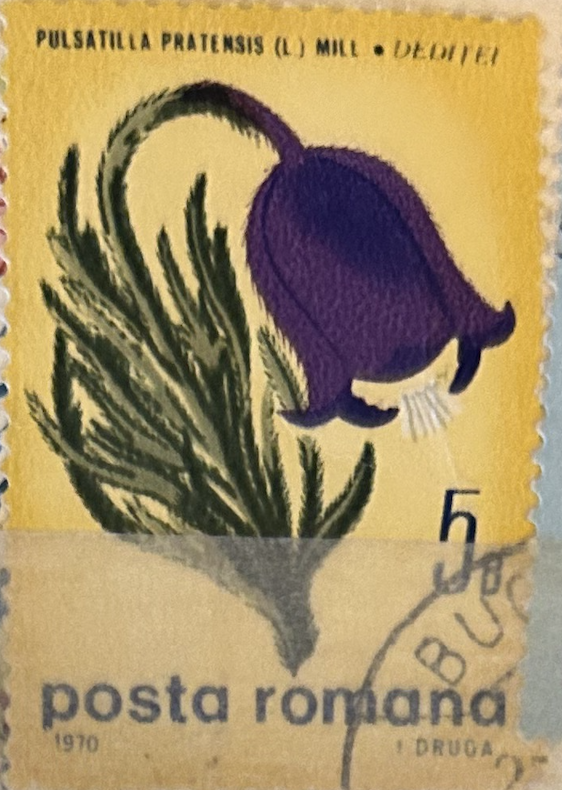
| SOURCE | TITLE| IMAGE MATCH | click to source page |
| www.istockphoto.com | Hungarian Iris Germanica Postage Stamp Stock Photo ... | 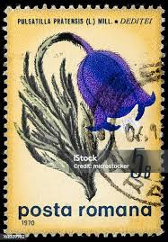 |
| www.todocoleccion.net | ❤️ sello de rumanía (1970): flor de pulsatilla - Compra ... | 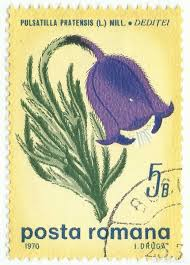 |
| www.abebooks.com | Antique Botanical Print HAREBELL CAMPANULA Original Hand ... | 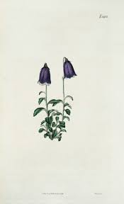 |
| www.stockvault.net | Purple Art Nouveau Stamp - Free Stock Photo by Nicolas ... | 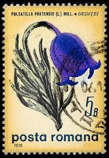 |
| www.ursusbooks.com | Campanula Pulla Bellflower | Margaret Lace Roscoe | 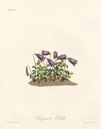 |
| www.alamy.com | ROMANIA - CIRCA 1957: stamp printed by Romania, show Anemone ... | 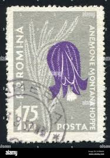 |
| www.ebay.com | 1979 Czechoslovakia 2227 MNH | eBay | 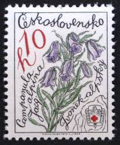 |
| www.facebook.com | Found this 1908 post card in my stash, was sent to my Aunt Edna. | 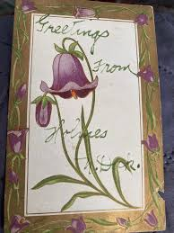 |
| www.alamy.com | Campanula pulla Atlas Alpenflora Stock Photo - Alamy | 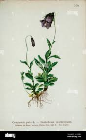 |
| www.ebay.com | Friedrich Endler 1809 Hand Colored Botanical Original Tab 11 ... | 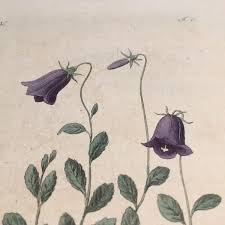 |
| www.dreamstime.com | Bulgaria `Protected Flowers` Series Postage Stamp, 1972 ... | 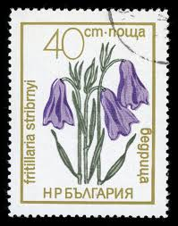 |
| www.etsy.com | Vintage Bellflower Art Print | Floral Wall Decor | Botanical ... | 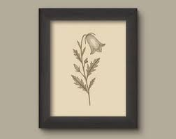 |
| www.shutterstock.com | Yugoslavia Circa 1959 Postage Stamp Yugoslavia Stock Photo ... | 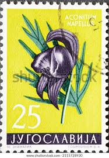 |
| printler.com | Kungsängslilja, Uppland pósters y Art Prints de Paperago ... | 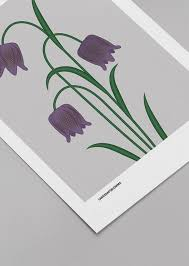 |
| en.wikipedia.org | Campanula pulla - Wikipedia | 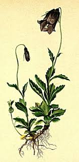 |
| www.mysticstamp.com | 5675 - 2022 First-Class Forever Stamp - Mountain Flora (coil ... | 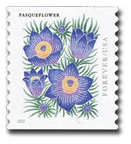 |
| stampsmall.shop | Timbre Romania 1957 Flora carpatina 1,75LEI cu M EROARE la ... | 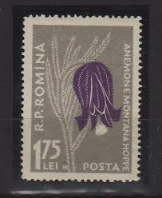 |
| www.antiqueprintsgallery.com | Blue Drops - Original Antique Botanical Print - Campanula ... | 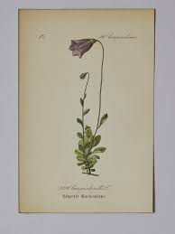 |
| www.flickr.com | Image from page 160 of "Der Führer in die Pflanzenwelt. Hü ... | 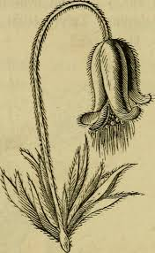 |
| metalposters.com | Russet Bell Flower, From Floral Illustrations Of The Seasons ... | 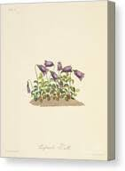 |
| meredithraifordart.com | Purple Tulip Botanical Art Print – Eternal Love | Romantic ... | 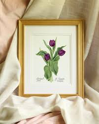 |
| www.instagram.com | Learn to paint these 5 beautiful flowers with step by step ... | 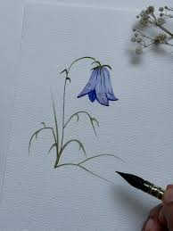 |
| www.redbubble.com | Vintage Campanula Alpina Postage Stamp" Poster for Sale by ... | 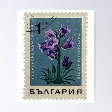 |
| www.bobshop.co.za | Romania - 1970 ROMANIA FLOWERS was listed for 1.20 on 25 Mar ... | 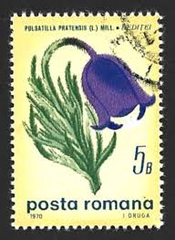 |
| www.wellappointedhouse.com | Robert Bonfils Archive, Flower Play – The Well Appointed House | 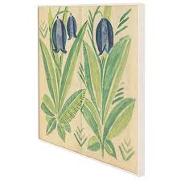 |
| www.jr-illustration.com | Amethyst | Jamie Richards Printmaking | 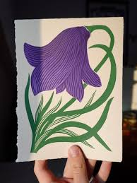 |
| www.jstonecards.com | Blue Bell Flower - Box of 8 or 10 - J Stone Cards | 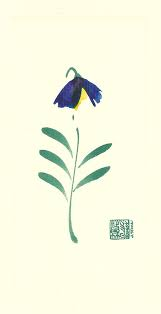 |
| www.hipstamp.com | Finland 1308 - Used - (70c) Sweet Pea (2008) (cv $1.75 ... | 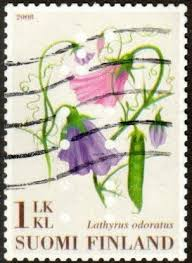 |
| www.buyhungarianstamps.com | 906-910 Hungary - Flowers (MNH) – Eastern Europe Postage ... | 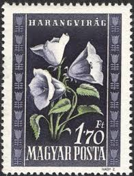 |
| hummingbirdhomeandco.com | Pressed Tulips Framed Art – Hummingbird Home & Co. | 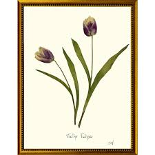 |
| www.etsy.com | Antique Botanical Print, Canterbury Bells Flower ... | 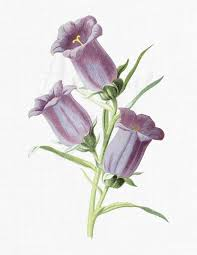 |
| www.ebay.com | Harebell Campanula Rotundifolia Wildflower Botany USA ... | 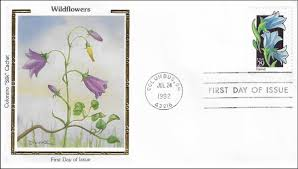 |
| www.spokeandblossom.com | Flower Splendor: Have Fun Getting To Know Wildflowers | 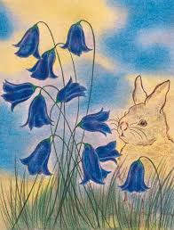 |
| www.bridgemanimages.com | Image of Wandering bellflower, Campanula peregrina, large ... | 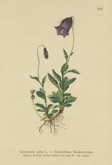 |
| colnect.com | Stamp: Alpine Bellflower (Bulgaria(Flowers - 1968) Mi:BG ... | 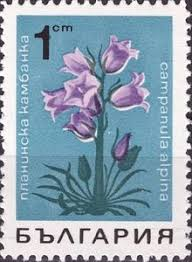 |
| www.kellyregina.com | 4 Pack of Mini 4x4" Flower Prints — kellyregina | 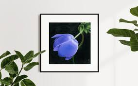 |
| www.amazon.com | Wordsworth's Gardens and Flowers: The Spirit of Paradise ... | 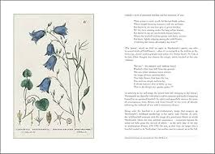 |
| edelweisspost.com | Edelweiss Post | 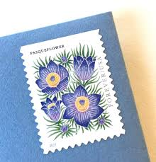 |
| www.audubonart.com | Besler Pl. 152, Dark blue canterbury bells, Corn cockle ... | 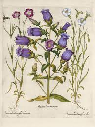 |
| www.vecteezy.com | A single, delicate bluebell flower showcasing a soft ... | 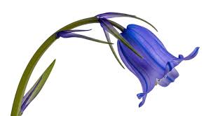 |
| www.redbubble.com | Pulsatilla pratensis ssp. nigricans" Art Print for Sale by ... | 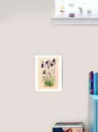 |
| manijehhabashi.com | Peace And Tranquility - Mani's Paintings | 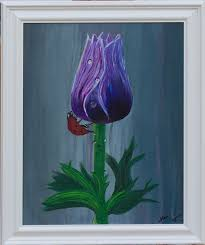 |
| summerweeds.com | Loddiges Botanicals Plate 900 Anemone paratensis - Summer Weeds | 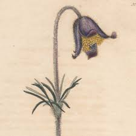 |
| www.facebook.com | Fabric painting 0n canvas a5 size india | 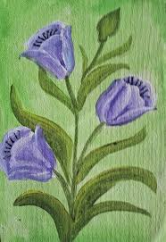 |
| www.walmart.com | USPS Mountain Flora Forever Stamps, 20 Self-Adhesive Postage ... | 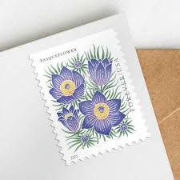 |
| www.instagram.com | Bundle of Deadly Nightshade family. Belladonna, Foxglove ... | 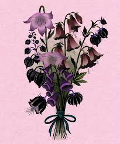 |
| www.youtube.com | Bell flowers painting. How to draw bell flowers step by step ... | 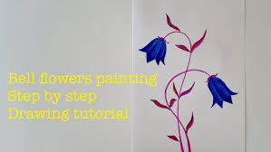 |
| www.abebooks.com | Botanica Pharmaceutica exhibens plantas officinalis quarum ... | 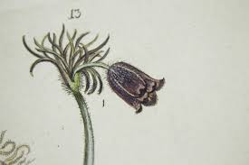 |
| www.buyhungarianstamps.com | 1354-1360 Czechoslovakia - Medicinal Plants (MNH) – Eastern ... | 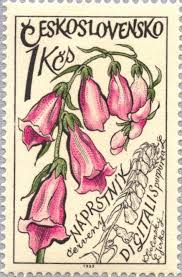 |
| www.pictureboxblue.com | Beautiful Bluebell Illustrations to Print For Free - Picture ... | |
| www.dreamstime.com | 204 Campanula Alpina Stock Photos - Free & Royalty-Free ... | |
| www.oldbookillustrations.com | Peach-Leaved Bellflower | Old Book Illustrations | |
| commons.wikimedia.org | File:Campanula rotundifolia (Thomé Bd.4 1905, BHL-81515 ... | |
| capricorn-press.com | 1892 Purple Tulip Botanical Print | |
| www.npsnm.org | Clematis hirsutissima | |
| www.rosetorresart.com | Hairy Clematis on Kelmscott Vellum — Rose Torres Art | |
| www.campbell-fine-art.com | Harebells] by Carl Ruckdeschel | |
| www.skillshare.com | 7-Day Wildflower Watercolour Challenge: Create a Stunning ... | |
| www.thingsinthebarn.com | The Tulip — Things in the Barn |
_clean.jpg){kind=link}